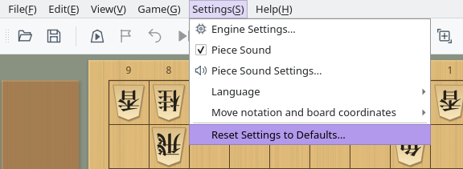
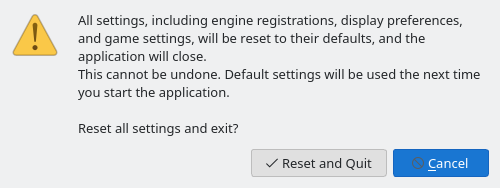

Reset Settings and the Settings File
How to return every setting to its default, and where your settings are stored
Screenshots were captured on Linux with the English interface.
Reset Settings to Defaults
Reset every setting at once, including engine registrations, from the Settings menu
Open the Settings menu in the menu bar and choose Reset Settings to Defaults… at the bottom. The Settings tab of the menu dock has the same button.
This command is available only when no game (including a network game), game analysis, consideration, mate search, or position editing is in progress. While one of these is running, it is grayed out.


Settings menu: Reset Settings to Defaults… is at the bottom
The Reset Settings confirmation opens. Click Reset and Quit to reset the settings and close ShogiBoardQ. This cannot be undone.
Click Cancel or press Esc to close the confirmation without changing anything. To prevent accidents, Cancel is selected when the confirmation opens.


Reset Settings confirmation
As with a normal exit, if a game record or opening book has unsaved changes, ShogiBoardQ asks whether to save them. If you cancel closing there, the settings are not reset.
The settings file is cleared after all windows have closed, so window sizes and positions that are normally saved on exit are cleared too. ShogiBoardQ does not restart by itself. Start it again, and it opens with the same default settings as on first launch.
If the settings file cannot be written, a Failed to Reset Settings message appears with the location of the settings file. Check the write permissions and free disk space for that location.
What Is Reset and What Is Kept
Only the contents of the settings file are cleared. Your files and tsume shogi history are kept
| Item | After reset | Notes |
|---|---|---|
| Engine registrations and options | Reset | The list of registered engines and each engine's options are removed. The engine files themselves are not deleted, so you can use an engine again after registering it. |
| Settings in dialogs such as Game | Reset | Time controls, player names, the auto-save folder for game records, the engines you chose last time, and so on |
| Appearance, fonts, and piece sound | Reset | Pieces, board, and background; the application font and text sizes; piece sound on/off and volume; and so on |
| Language and notation | Reset | The language returns to Use System Default, and Move notation and board coordinates returns to Follow UI language |
| Windows and docks | Reset | Window and dialog sizes and positions, the dock arrangement, saved dock layouts, and menu favorites |
| Recent files | Reset | Recent opening book files and SFEN collections, the last folder you opened, the tsume shogi collection you selected, and so on |
| Game records, opening books, and other files you saved | Kept | Files you saved yourself are not deleted |
| Tsume shogi attempt history | Kept | Stored in a database separate from the settings file (see Location) |
| Cache | Kept | Temporary piece sound audio and tsume shogi results, re-created when needed |
To restore only some settings, change them on their own screens. For example, Piece Sound Settings… and the Game dialog each have a Restore Defaults button.
Where the Settings File Is Stored
Settings are stored in ShogiBoardQ.ini in a fixed folder on each OS
| OS | Settings file |
|---|---|
| Windows | C:\Users\<user name>\AppData\Local\ShogiBoardQ\ShogiBoardQ.ini |
| macOS | ~/Library/Preferences/ShogiBoardQ/ShogiBoardQ.ini |
| Linux | ~/.config/ShogiBoardQ/ShogiBoardQ.ini ($XDG_CONFIG_HOME/ShogiBoardQ/ShogiBoardQ.ini if the XDG_CONFIG_HOME environment variable is set) |
~ is your home folder (/Users/<user name> on macOS, /home/<user name> on Linux). Settings are stored per user in this location, not in the folder where you extracted the release ZIP or inside the AppImage, so they carry over when you replace ShogiBoardQ with a newer version or move the application folder.
- Windows: Type
%LOCALAPPDATA%\ShogiBoardQin the File Explorer address bar and press Enter. - macOS: In Finder, choose Go → Go to Folder… and enter
~/Library/Preferences/ShogiBoardQ. The Library folder is normally hidden. - Linux: Enter
~/.config/ShogiBoardQin your file manager's location bar..configis a hidden folder.
To back up your settings, quit ShogiBoardQ and copy ShogiBoardQ.ini. To restore it, put the file back in the same place while ShogiBoardQ is not running. Changes made to the file while ShogiBoardQ is running may be overwritten by the settings it saves when it closes.
If you cannot reset from the menu, for example because ShogiBoardQ does not start, delete or rename ShogiBoardQ.ini while ShogiBoardQ is not running. The next launch starts with the default settings.
| OS | Tsume shogi attempt history | Cache |
|---|---|---|
| Windows | %APPDATA%\ShogiBoardQ | %LOCALAPPDATA%\ShogiBoardQ\cache |
| macOS | ~/Library/Application Support/ShogiBoardQ | ~/Library/Caches/ShogiBoardQ |
| Linux | ~/.local/share/ShogiBoardQ | ~/.cache/ShogiBoardQ |
The attempt history is stored in tsume_progress.sqlite. Reset Settings to Defaults… does not delete it, so to clear the history as well, quit ShogiBoardQ and delete this file. You can also delete the cache folder; it is re-created when needed.
On Windows, %APPDATA% is C:\Users\<user name>\AppData\Roaming and %LOCALAPPDATA% is C:\Users\<user name>\AppData\Local. On Linux, if the XDG_DATA_HOME or XDG_CACHE_HOME environment variable is set, the ShogiBoardQ folder under it is used instead.